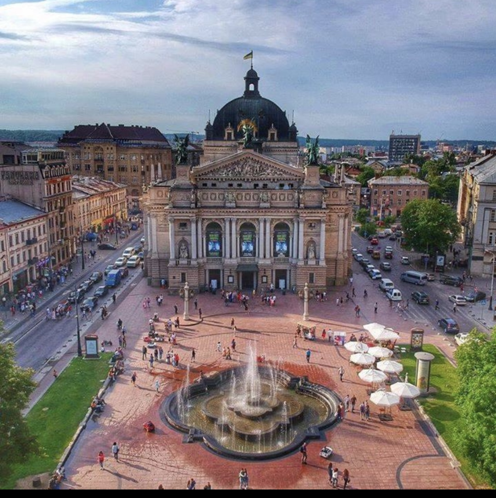

Неймовірна архітектура

У Львові знаходиться найбільша кількість пам’яток архітектури в Україні. Гуляючи вуличками міста, Ви будете вражені їхньою красою та архітектурною різноманітністю. Рекомендуємо відвідати: Оперний театр - вважається одним із найгарніших театрів у Європі; площу Ринок - «серце» та історичний центр старовинного міста; Вірменський собор з унікальними фресками та розписами; Італійський дворик - пам’ятка доби Відродження; будинок «Пори року», оздоблений оригінальним декором та сонячним годинником; каплиця Боїмів - «Біблія у камені», аналогів немає навіть у Європі; костел Єзуїтів із легендарними підземеллями; розкішний Палац Потоцьких - працює як картинна галерея з чудовими виставками; Шляхетське казино (Будинок вчених) - вишукані інтер’єри, які часто стають місцем для проведення балів та кінознімання; розкішний Домініканський собор і не тільки. Щоб все роздивитись - не вистачить одного-двох днів, тому до Львова повертаються знову і знову.
Найсмачніша кава та шоколад
З кожним роком у Львові збільшується кількість кав’ярень, але єдине залишається незмінним - збереження кавових традицій та культура споживання кави. Адже, кава у Львові - не просто напій, це цілий ритуал. Обов’язково спробуйте «запаяну каву», з карамельною скоринкою, запашну каву у джезві на піску та натуральний шоколад у Львівській майстерні. Щорічно, львів’ян та гостей міста запрошують відвідати найароматніший фестиваль - «На каву до Львова». Під час свята проходить конкурс, який визначає найкращу кав’ярню міста. Також, у рамках фестивалю часто проводять різноманітні мистецькі заходи та дегустації.
Скуштувати Галицьку кухню
Чи знаєте ви, що таке «флячки», «цвіклі», «терті пляцки», «кнедлі» чи «андрути»? Якщо ні - не лякайтесь цих слів, а приїжджайте до Львова і заходьте посмакувати галицькою кухнею. На десерт обов’язково замовте легендарний львівський сирник, який вже став своєрідною візитною карткою галицької кухні.
Серед десертів, почесне місце посідає також штрудель. Його готують із різноманітними начинками, але найбільш популярними є штруделі з вишнями або маком.
Дитячі канікули у Львові
Місто Лева буде чудовим місцем відпочинку навіть для найменших мандрівників
Адже тут стільки всього цікавого: покататись на екскурсійному поїзді, відчути себе дослідником під час інтерактивного квесту, побачити мамонта у музеї, навчитись виготовляти карамель і розмальовувати пряники, посмакувати топленим шоколадом, спостерігати за хімічними дослідами у старовинній аптеці, шукати й рахувати левів у Львові, поїхати на Бананову ферму чи у Парк динозаврів за місто... і ще безліч атракцій для дітей різного віку. Тому, якщо подорожуєте з дітьми, обов’язково приїжджайте до Львова на шкільні канікули чи просто провести вихідні разом.